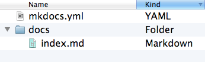
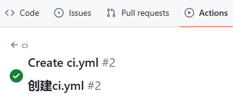

MkDocs
本文档托管于Github Pages
概述
MarkDown静态站点生成器，文档语言使用Markdown完成撰写，使用mkdocs.yml作为配置文档
特色
-
任意托管
-
及时预览
- 易于配置
安装
目前MkDocs的主题材料（Theme Material）以Python包的形式发布，可以通过pip包管理器进行安装和管理
检验是否安装有python和pip环境（windows）
python --version
Python 3.12.5
pip --version
pip 24.2 from C:\Users\admin\AppData\Local\Programs\Python\Python312\Lib\site-packages\pip (python 3.12)
没有环境则执行以下操作
安装python：
Python Release Python 3.12.5 | Python.org
安装过程中启用配置python到环境变量
安装pip：
curl https://bootstrap.pypa.io/get-pip.py -o get-pip.py
python get-pip.py
安装mkdocs：
pip install -e mkdocs-material
开始
创建一个项目：
mkdocs new .
创建一个项目后，会自动生成一个mkdocs.yml配置文件，配置文件中包含项目信息，文档目录，主题等信息

配置
mkdocs.yml
site_name:站点标题
文档
存放在docs目录
主题
theme:
name: material
features:
- navigation.indexes
导航 *
nav:
- MkDocs: index.md
- Usage: usage.md
- Blog:
- blog/index.md
- About: about.md
在此目录下创建的md文件会作为目录导航文档显示在站点中
嵌套目录使用文件路径的方式完成编辑
插件
plugins:
- search
构建
mkdocs build
该命令会生成一个site目录
需注意若在配置中使用nav导航，则对应的目录需要与docs中md文件一致避免报错
托管
将项目托管到 GitHub Pages
在GitHub中创建一个Public仓库
将项目推送到仓库中
git checkout --orphan gh-pages
git rm -rf .
cp -a ../docs/site/. .
git add .
git commit -m "Update GitHub Pages"
git push origin gh-pages
git checkout -
或者使用简化的指令
mkdocs gh-deploy --force
效果同上
根据实际地址修改path和url
在仓库主干根目录中创建一个.github/workflows目录及github-actions-demo.yml工作流文件
name: ci
on:
push:
branches:
- master
- main
permissions:
contents: write
jobs:
deploy:
runs-on: ubuntu-latest
steps:
- uses: actions/checkout@v4
- name: Configure Git Credentials
run: |
git config user.name github-actions[bot]
git config user.email 41898282+github-actions[bot]@users.noreply.github.com
- uses: actions/setup-python@v5
with:
python-version: 3.x
- run: echo "cache_id=$(date --utc '+%V')" >> $GITHUB_ENV
- uses: actions/cache@v4
with:
key: mkdocs-material-${{ env.cache_id }}
path: .cache
restore-keys: |
mkdocs-material-
- run: pip install mkdocs-material
- run: mkdocs gh-deploy --force
执行Actions


表示托管成功，通过浏览器访问
Commands
mkdocs new [dir-name]- Create a new project.mkdocs serve- Start the live-reloading docs server.mkdocs build- Build the documentation site.mkdocs -h- Print help message and exit.
Project layout
mkdocs.yml # The configuration file.
docs/
index.md # The documentation homepage.
... # Other markdown pages, images and other files.